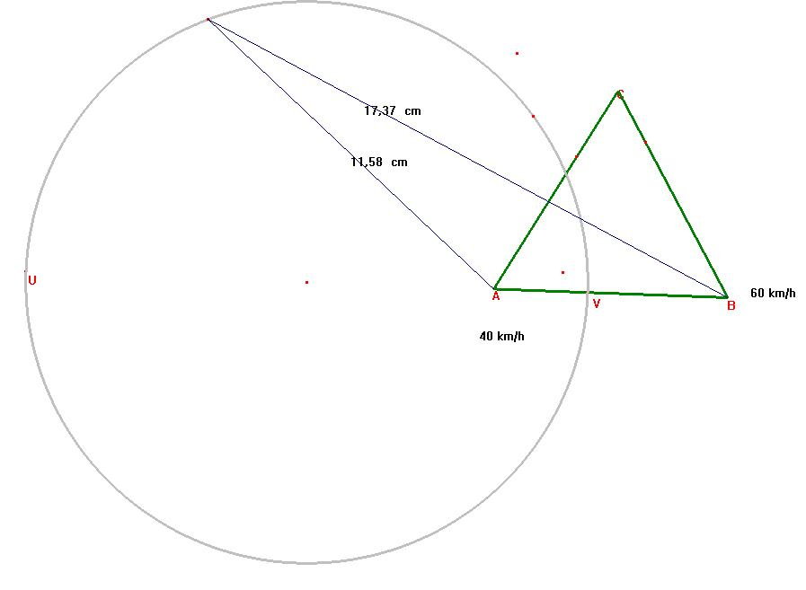
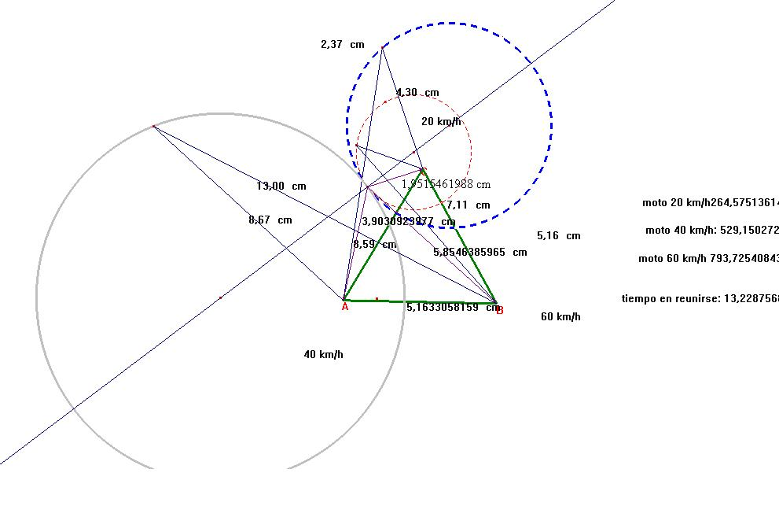

En el desierto del Sahara y en tres puntos A, B, C, que forman los vértices de un triángulo equilátero de 700 km de lado, se encuentran tres vehículos cuyas velocidades respectivas son de 20 km/h, 40 km/h y 60 km/h, comunicados por radio con el centro de operaciones, reciben la orden de partir a reunirse lo antes posible. ¿Dónde está situado el punto de la reunión? (las motos siempre están en movimiento, precisión del editor)
Aproximación del editor al problema, con conjeturas, análisis y consideraciones.
1.- ¿Cuél es el lugar geométrico de los puntos donde pueden reunirse, por ejemplo, las motos de 40 km/h y 60 km/h?
Es decir, dados dos puntos A y B del plano, ¿cuáles son los puntos P del plano para los que 3 AP = 2 BP ?
Sobre la recta AB hay dos de tales puntos, uno V interior a AB y otro U exterior al segmento.
Pues bien la circunferencia dediámetro VU es el lugar geométrico pedido.

Sea P un punto de la circunferencia. Tracemos PU y PV. Son perpendiculares, por ser UV diámetro, primera condición necesaria para ser PU y PV bisectrices exterior e interior del ángulo APB.
Tracemos PA y PB. Por ser 3 AU = 2 BU , y 3 AV = 2 BV, es AU/BU = AV/BV= 2/3, tenemos la segunda concición necesaria para que sean PU y PV las bisectrices exterior e interior de APB (ver la solución del profesor Capponi del problema 1 de esta colección y la solución del 97 del profesor Aranda).
Así pues, PA/PB = 2/3, y 3PA=2PB, cqd. Además, son los únicos puntos del plano que cumplen la propiedad.
2º Luego, si consideramos las tres motos, tendremos la figura:

Haciendo un planteamiento proporcional, se obtienen los datos de la figura, que coinciden con las soluciones aportadas por el profesor Aranda en su solución.
2º.- Hipótesis a corroborar: Las tres circunferencias son tangentes. Sus centros están alineados. Veamos lo segundo
Sean A (00), B( a, 0), C( a/2, a sqr (3)/2). Tomando por raíz sqr.
V tiene por coordenadas (2/5 a, 0), y U (-2a,0), luego el primer centro es (-4/5 a, 0), que corresponde a la circunferencia dibujada en gris.
Los puntos sobre la recta BC son de coordenadas (5a/8, a3 sqr (3)/8), (a/4, 3 a sqr (3) /4),
y el centro de la segunda es (7 a /16,.9 a sqr (3)/16), que corresponde a la circunferencia dibujada a trazos rojos.
Los puntos correspondientes a la tercera circunferencia son: (a/3, a sqr (a)/3), y (a, a sqr (3)),
siendo el centro de la misma, dibujada a trazos azules, (2 a/3, 2a sqr(3)/3).
Los puntos (-4/5 a, 0), (7 a /16,.9 a sqr (3)/16), y (2 a/3, 2a sqr(3)/3) están alineados, como se puede comprobar, ya que
las correspondientes razones de las diferencias de coordenadas son iguales a 32/27.
Para contrastar que son tangentes, habría que ver que la suma o la diferencia de los radios (según sean exteriores o interiores) coincide con la distancia entre los centros.
Así, tomando dos decimales y en el triángulo de 700k de lado, los radios son:
466,67 km la azul
840 km la gris
262,50 km la roja.
Y las distancias de los centros son:
1102,50 km
204,17 km. lo que demuestra la tangencia de las circunferencias.
Consideraciones:
- Creo que es sorprendente que se encuentren "fuera" del triángulo.
- ¿para qué velocidades se encontrarán "dentro"?
- La generalización de la
"mediatriz", es decir, el lugar de los puntos situados a la misma distancia de dos dados, (recta perpendicular en su punto medio)
a
"lugar de los puntos situados a una distancia proporcional a dos dados", (circunferencia de diámetro los puntos que cumplen la condición sobre la recta inicial,
es un tema geométrico de gran interés, puesto que la "generalización" es uno de los temas de mayor importancia en matemáicas.
Ricardo Barroso Campos Didáctica de las Matemáticas Universidad de Sevilla.